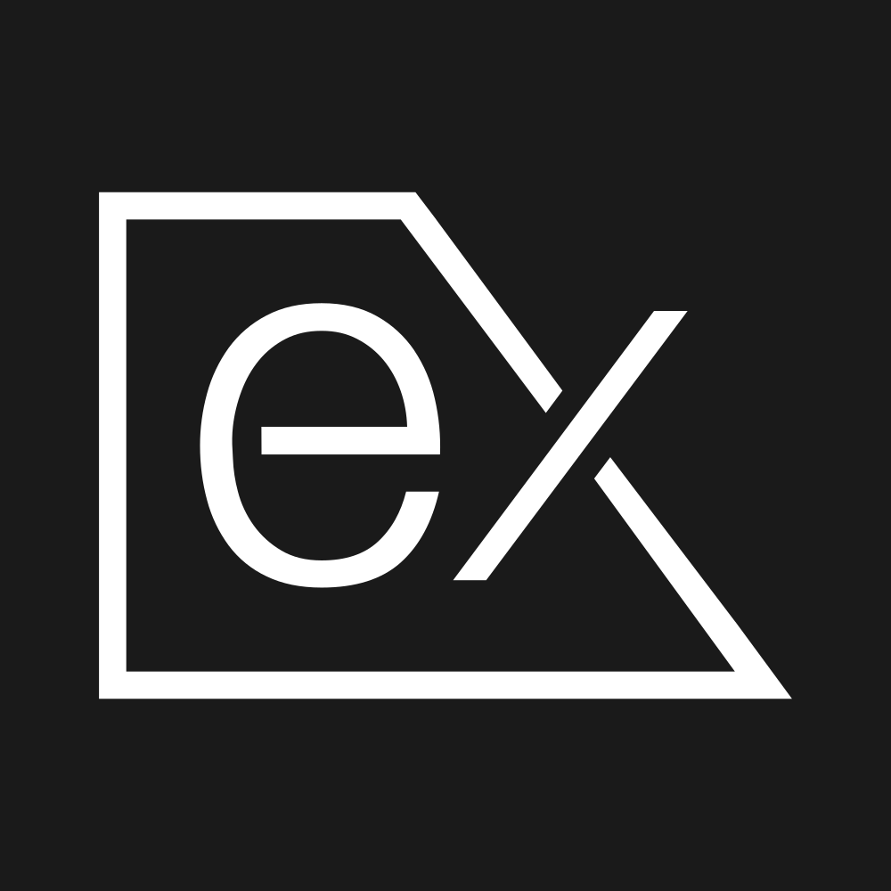

CURRENTLY INSPECTING01 / 18
Supabase
BACKEND AS A SERVICE
Building application backends with databases, authentication, and Supabase services.
PROFICIENCYPROFICIENT
Technology shouldn't be complicated. No bloat, just working software.
I help businesses digitize their workflows and reach customers on any screen by connecting robust APIs with fast, intuitive web dashboards and mobile apps.
BACKEND AS A SERVICE
Building application backends with databases, authentication, and Supabase services.
02 ABOUT ME
WEB / BACKEND / MOBILEEngineering beyond standard screens.
I don't just write code in isolation. I focus on how systems actually operate in the real world. From architecting backend databases and mobile apps for ecommerce to experimenting with computer vision for touchless kiosks, I build software that adapts to user needs.
FULL STACK WEB • CROSS PLATFORM MOBILE • SMART INTERFACES
Building responsive, interactive web interfaces with well structured components for real application needs.
INTERFACE · COMPONENTS · INTERACTION
Developing APIs, authentication, and data management so every interface connects with the services the application depends on.

Express.jsAPI · AUTHENTICATION · DATABASE
Developing cross platform mobile applications with Flutter and Dart, from the interface through to backend integration.
CROSS PLATFORM · UI · API INTEGRATION
03 TECH STACK
TOOLS BEHIND THE PROCESSGreat software relies on a solid foundation. This is the core ecosystem I use to design relational databases, engineer backend APIs, and deliver fluid applications across both web browsers and mobile devices.
18 CORE TOOLS • ONE COHESIVE WORKFLOW04 SELECTED WORKS
PROOF OF EXECUTIONArchitecture means nothing without shipping. Here is a curated selection of platforms where backend logic, database design, and user interfaces come together to solve actual operational challenges.
Regional UKM Community Portal and Local Business Directory
A regional community landing page and digital hub designed to unite local micro, small, and medium enterprises across the Pameungpeuk region and surrounding areas. I architected a clean, accessible web platform that showcases local products, centralizes community information, and bridges traditional businesses with digital opportunities.
View Community HubHand Tracking Self Service System for Culinary Outlets
A touchless ordering kiosk built to modernize dining queues and hygiene at local culinary outlets. By combining MediaPipe computer vision for real time hand gesture navigation with digital signage and mobile payment sync, the system lets customers browse menus and complete orders without physical screen contact.
See How It WorksCustomer Ordering Portal and Automated Point Rewards
A dedicated web application engineered to streamline daily culinary orders and drive customer retention. I built the interactive menu ordering workflow, integrated real time transaction tracking, and designed a dynamic loyalty point engine that automatically rewards repeat buyers.
View Live PlatformFinancial Literacy Portal and Custom Content Management
A structured digital publishing platform focused on delivering accessible financial education. I architected a custom content management system that allows administrators to publish structured learning modules effortlessly while providing readers with a fast, distraction free reading experience across all devices.
Explore PlatformUnified Mobile Storefront, Web Admin, and Automated Payment
An integrated retail ecosystem designed to bridge mobile shopping with centralized inventory control. I engineered the RESTful API backend and relational database in Laravel, connected it to a fluid Flutter mobile app for customers, and built a web management dashboard featuring instant QRIS payment verification.
Explore Case StudyF&B Innovation Showcase, Article Hub, and Partner Onboarding
The official web presence for an F&B innovation living lab that bridges student engineering talent with real world culinary enterprises. I translated the brand identity into a fast, high contrast portal featuring service showcases, article publishing, and digital onboarding for local business partners.
Open Living Lab05 ENGINEERING & WORKFLOW
HOW I DELIVER VALUESix connected disciplines, one delivery path. Hover or select any pillar to inspect how each stage of the work is executed.
CORE ENGINEERING PHILOSOPHY
I engineer reliable applications with clean architecture, modern frameworks, and structured testing that turn complex workflows into working software.
HOVER OR SELECT ANY PILLAR TO INSPECT THE WORKFLOW
06 CONTACT
INITIATE A PROJECTOPEN FOR NEW ENGAGEMENTS
Let us talk architecture, execution, and how we can bring your next product to life.